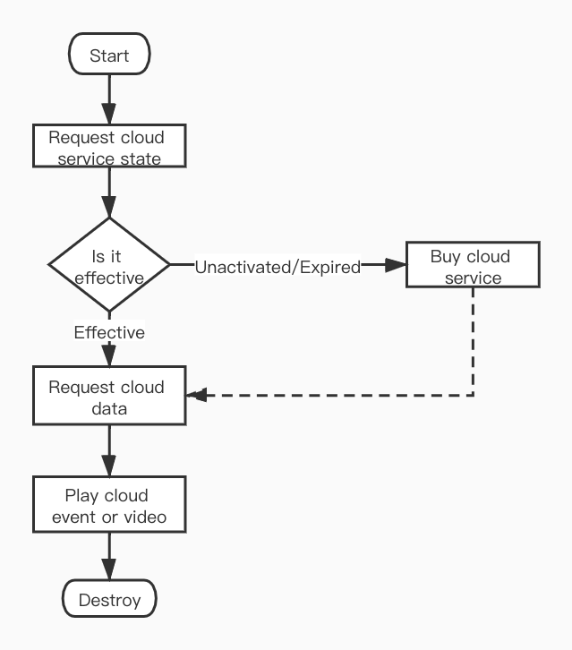

1. Cloud Storage
Tuya IoT provides cloud storage service for smart camera, which can upload the video recorded by the device to Tuya cloud.
1.1. Flow chart
Request the cloud storage service status first. If the cloud storage service is not activated or has expired and the cloud video has been completely deleted (after the cloud storage service expires, the uploaded cloud video will be retained for some days), you need to first purchase cloud storage services. If the cloud storage service is in the validity period, first request the dates of the cloud storage video, and then request the relevant data of the specified date, including cloud storage events, timeline data, authentication information, etc. After that, you can choose a cloud storage event or a point in time to start playing cloud video.

1.2. Cloud service
The original cloud storage service purchase component: TYCameraCloudServicePanelSDK is no longer maintained and has been changed to the cloud service bizBundle. Please go to Cloud Service BizBundle to view the documentation.
Since the
TYCameraCloudServicePanelSDKcomponent uses the interface ofUIWebView, the App Store will no longer accept new apps usingUIWebViewas of April 2020 and app updates usingUIWebViewas of December 2020. Therefor, please replace it with Cloud Service BizBundle as soon as possible.
1.3. Cloud video
After purchasing the cloud storage service, the smart camera will upload the recorded video to the Tuya cloud. You can use the SDK to play videos that have been uploaded to the Tuya cloud.
Class and Protocol
| Class (Protocol) | Description |
|---|---|
| TuyaSmartCloudManager | Cloud storage service status, video data management and cloud video playback |
| TuyaSmartCloudManagerDelegate | Cloud video playback delegate |
When TuyaSmartCloudManager initializes, the device id needs to be passed in. Cloud video starts playing silently by default. If the sound need turned on when playing, the mute state can be set to NO when initialization. When cloud video plays, both the video frame data and the frame information are called back using the delegate method.
Declaration
TuyaSmartCloudManager initialize.
- (instancetype)initWithDeviceId:(NSString *)devId;
Parameters
| Parameter | Description |
|---|---|
| devId | Deivice id |
Declaration
Enable encrypted image, set it YES, the picture in cloud event modes will be encrypted, need to use TYEncryptImage component display the image.
@property (nonatomic, assign) BOOL enableEncryptedImage;
The TuyaSmartCloudManagerDelegatehas only one method, will return each frame of video YUV data and frame information. If you want to render video frame by yourself, set autoRender of TuyaSmartCloudManager to NO( default is YES), and then render the video in delegate method.
Declaration
Respond video frame data and frame information.
- (void)cloudManager:(TuyaSmartCloudManager *)cloudManager didReceivedFrame:(CMSampleBufferRef)frameBuffer videoFrameInfo:(TuyaSmartVideoFrameInfo)frameInfo;
Parameters
| Parameter | Description |
|---|---|
| cloudManager | TuyaSmartCloudManager object |
| frameBuffer | Video frame data |
| frameInfo | Video frame information |
1.3.1. Cloud storage data
Before playback the cloud video, the relevant data of cloud storage needs to be loaded first. This interface will return the current state of cloud storage service, as well as the corresponding encryption secret key and authentication information.
Declaration
Loading cloud storage data.
- (void)loadCloudData:(void(^)(TuyaSmartCloudState state))complete
Parameters
| Parameter | Description |
|---|---|
| complete | Complete callback, return the cloud service status |
enum TuyaSmartCloudState
| Value | Description |
|---|---|
| TuyaSmartCloudStateNoService | The cloud storage service is not enabled |
| TuyaSmartCloudStateNoData | Cloud storage is available, but there is no video |
| TuyaSmartCloudStateValidData | Cloud storage is available, and has the playback video |
| TuyaSmartCloudStateExpiredNoData | The cloud storage service has expired and there is no video |
| TuyaSmartCloudStateExpiredData | The cloud storage service has expired, but there are still playback videos to view |
| TuyaSmartCloudStateLoadFailed | Loading failed |
After the cloud storage service expires, the uploaded cloud storage video is reserved for a period of time (usually 7 days, depending on the cloud storage service agreement). If there is no renewal during this period, the cloud storage video will be deleted after the expiration.
Cloud video date
After successfully returning the loaded cloud storage data, if there is video playback data in the cloud, the date of video playback data can be obtained by cloudDaysproperty.
@property (nonatomic, strong, readonly) NSArray<TuyaSmartCloudDayModel *> *cloudDays;
TuyaSmartCloudDayModel
| Field | Type | Description |
|---|---|---|
| sumDuration | NSInteger | Video total sesonds of the day |
| uploadDay | NSString | Date format string, format: yyyy-MM-dd |
| startTime | NSInteger | Unix timestamp of 00:00:00 |
| endTime | NSInteger | Unix timestamp of 23:59:59 |
Video time slice
Before playing the cloud video, you need to get the time slices of the video clips of that day.
Declaration
Get the time slices of the video clips of some day.
- (void)timeLineWithCloudDay:(TuyaSmartCloudDayModel *)cloudDay
success:(void(^)(NSArray<TuyaSmartCloudTimePieceModel *> * timePieces))success
failure:(void(^)(NSError * error))failure;
Parameters
| Parameter | Description |
|---|---|
| cloudDay | TuyaSmartCloudDayModel object |
| success | Success callback, return the time slices of videos |
| failure | Failure callback, error indicates an error message |
Declaration
Download cloud videos
- (void)downloadCloudVideoWithRange:(NSRange)timeRange
filePath:(NSString *)videoPath
success:(DownloadSuccess)success
progress:(DownloadProgress)progress
failure:(DownloadFailure)failure;
Parameters
| Parameter | Description |
|---|---|
| timeRange | The range of the video clip to be downloaded, location uses UTC timestamp, length unit is second |
| videoPath | The storage path of the video file, the video is saved in the format of mp4, the address string needs to have a suffix of .mp4 |
| success | Download success callback, the parameter is the file save path |
| progress | Download progress callback, the parameter is the download progress, the value range is 0～100 |
| failure | Download failed callback, the parameter is the error message |
Declaration
Cancel downloading.
- (void)cancelDownloadCloudVideo;
Declaration
Deleting cloud storage data will delete videos and events at the same time. Currently, it only supports deleting all-day cloud storage data.
- (void)deleteCloudVideoWithRange:(NSRange)timeRange success:(void(^)(void))success failure:(void(^)(NSError *error))failure;
Parameters
| Parameter | Description |
|---|---|
| timeRange | The time range for deleting data, location is the UTC timestamp at 0 o'clock in a certain day, length is the number of seconds in a day, you can use 8 24 3600 |
| success | Cloud storage data deletion success callback |
| failure | Cloud storage data deletion failure callback, the parameter is an error message. |
TuyaSmartCloudTimePieceModel
| Field | Type | Description |
|---|---|---|
| startTime | NSInteger | Video start time, Unix timestamp |
| startDate | NSDate | Video start date |
| endTime | NSInteger | Video end time, Unix timestamp |
| endDate | NSDate | Video end date |
Cloud event
After the cloud storage service is started, the device will be associated with the cloud video by detecting the events reported by the alarm. Cloud storage alarm events and detection alarm messages are slightly different. Their trigger reasons may be the same, but the deletion of detection alarm message will not affect the cloud storage event, and not all detection alarm messages will trigger the cloud video recording, such as lowpower warning. Moreover, cloud storage events are associated with cloud videos. Under normal circumstances, each cloud storage event will have a corresponding cloud video.
Declaration
Get cloud alarm events of some day.
- (void)timeEventsWithCloudDay:(TuyaSmartCloudDayModel *)cloudDay
offset:(int)offset
limit:(int)limit
success:(void(^)(NSArray<TuyaSmartCloudTimeEventModel *> * timeEvents))success
failure:(void(^)(NSError * error))failure;
Parameters
| Parameter | Description |
|---|---|
| cloudDay | TuyaSmartCloudDayModel object |
| offset | Offset, 0 marks the beginning of the first event |
| limit | Count limit, -1 indicates access to all events |
| success | Success callback, return the event mode list |
| failure | Failure callback, error indicates an error message |
TuyaSmartCloudTimeEventModel
| Field | Type | Description |
|---|---|---|
| describe | NSString | Description of event |
| startTime | NSInteger | Start time of event, Unix timestamp |
| endTime | NSInteger | End time of event, Unix timestamp |
| snapshotUrl | NSString | Camera captures a picture of the event when it happens |
The real-time screenshots carried in the cloud storage event are encrypted and need to be displayed through the encrypted image component
TYEncryptImage. For details, refer to the Encrypted Image chapter.
1.3.2. Cloud video playback
When playing a cloud video, you need to specify the start time, end time, and whether it is a event.
Declaration
Play cloud video.
- (void)playCloudVideoWithStartTime:(long)startTime
endTime:(long)endTime
isEvent:(BOOL)isEvent
onResponse:(void(^)(int errCode))responseCallback
onFinished:(void(^)(int errCode))finishedCallback;
Parameters
| Parameter | Description |
|---|---|
| startTime | The start time to playback |
| endTime | The end time, cloud video playback will automatically continue to play until the end of all videos of the day |
| isEvent | Is playback event |
| responseCallback | Result callback, errCode is 0 indicates playback succeed |
| finishedCallback | Video playback finished callback |
Declaration
Pause playabck.
- (int)pausePlayCloudVideo;
Return
| Type | Description |
|---|---|
| int | Error code, indicating the reason for the failure, 0 indicates succeed |
Declaration
Resume playback.
- (int)resumePlayCloudVideo;
Return
| Type | Description |
|---|---|
| int | Error code, indicating the reason for the failure, 0 indicates succeed |
Declaration
Stop playback.
- (int)stopPlayCloudVideo;
Return
| Type | Description |
|---|---|
| int | Error code, indicating the reason for the failure, 0 indicates succeed |
Declaration
Get the video rendering view.
- (UIView<TuyaSmartVideoViewType> *)videoView;
Return
| Type | Description |
|---|---|
| UIView |
Default video rendering view |
If play a video clip (TuyaSmartCloudTimePieceModel), startTime pass in a timestamp between TuyaSmartCloudTimePieceModel.startTime and TuyaSmartCloudTimePieceModel.endTime, isEvent pass in NO.
If play a event (TuyaSmartCloudTimeEventModel), startTime pass in TuyaSmartCloudTimeEventModel.stsrtTime, isEvent pass in YES.
The endTime could pass in 'TuyaSmartCloudDayModel.entTime'.
Other functions
Declaration
Enable mute of video.
- (void)enableMute:(BOOL)mute success:(void(^)(void))success failure:(void (^)(NSError * error))failure;
Parameters
| Parameter | Description |
|---|---|
| mute | Is muted |
| success | Success callback |
| failure | Failure callback, error indicates an error message |
Declaration
Get mute state of video.
- (BOOL)isMuted;
Return
| Type | Description |
|---|---|
| BOOL | Is muted |
Declaration
Record the video and save it to the phone system album.
- (void)startRecord;
Declaration
Save the recorded video to the specified path.
- (void)startRecordAtPath:(NSString *)filePath;
Parameters
| Parameter | Description |
|---|---|
| filePath | Save the video file path |
Declaration
Stop record and save the video.
- (int)stopRecord;
Return
| Type | Description |
|---|---|
| int | Error code, indicating the reason for the failure, 0 indicates succeed |
Declaration
Video screenshot, picture saved in the phone system album.
- (UIImage *)snapShoot;
Return
| Type | Description |
|---|---|
| UIImage | UIImage object of the video screenshot, returns nil to indicate that the image saved failed |
Declaration
Video screenshot, image saved in the specified file path.
- (UIImage *)snapShootAtPath:(NSString *)filePath thumbnilPath:(NSString *)thumbnilPath;
Parameters
| Parameter | Description |
|---|---|
| filePath | The file path to save the picture |
| thumbnilPath | Save the file path of the thumbnail and pass nil if you don't need it |
Example
ObjC
// self.devId = @"xxxxx";
- (void)viewDidLoad {
_cloudManager = [[TuyaSmartCloudManager alloc] initWithDeviceId:self.devId];
[_cloudManager enableMute:NO success:nil failure:nil];
_cloudManager.delegate = self;
}
- (void)loadData {
__weak typeof(self) weakSelf = self;
[self.cloudManager loadCloudData:^(TuyaSmartCloudState state) {
weak_self.cloudStorageDays = weak_self.cloudManager.cloudDays;
weak_self.selectedDay = weak_self.cloudManager.cloudDays.lastObject;
[weakSelf checkCloudState:state];
}];
}
- (void)requestTimelineData {
[self.cloudManager timeLineWithCloudDay:self.selectedDay success:^(NSArray<TuyaSmartCloudTimePieceModel *> *timePieces) {
// success
} failure:^(NSError *error) {
// failed
}];
}
-(void)playVideo:(TuyaSmartCloudTimePieceModel *)timePiece {
[self.cloudManager playCloudVideoWithStartTime:timePiece.startTime endTime:self.selectedDay.endTime isEvent:NO onResponse:^(int errCode) {
if (errCode == 0) {
// success
}else {
// failed
}
} onFinished:^(int errCode) {
// finished
if (errCode != 0) {
// Some error
}
}];
}
- (void)playEvent:(TuyaSmartCloudTimeEventModel *)event {
[self.cloudManager playCloudVideoWithStartTime:event.startTime endTime:self.selectedDay.endTime isEvent:YES onResponse:^(int errCode) {
if (errCode == 0) {
// success
}else {
// failed
}
} onFinished:^(int errCode) {
// finished
if (errCode != 0) {
// Some error
}
}];
}
- (void)pause {
if ([self.cloudManager pausePlayCloudVideo] != 0) {
// Pause playabck failed
}
}
- (void)resume {
if ([self.cloudManager resumePlayCloudVideo] != 0) {
// Resume playback failed
}
}
- (void)stop {
[self.cloudManager stopPlayCloudVideo];
}
- (void)muteAction {
BOOL isMuted = [self.cloudManger isMuted];
[self.cloudManager enableMute:!isMuted success:^{
// success
} failure:^(NSError *error) {
// failed
}];
}
- (void)recordAction {
if (self.isRecording) {
if ([self.cloudManager stopRecord] != 0) {
// Record video failed
}else {
// Record video success, the video has been saved to the system album
}
self.isRecording = NO;
}else {
[self.cloudManager startRecord];
self.isRecording = YES;
}
}
- (void)snapShoot {
if ([self.cloudManager snapShoot]) {
// The picture has been saved to the system album
}else {
// failed
}
}
Swift
func viewDidLoad() {
let cloudManager = TuyaSmartCloudManager(deviceId: devId)
cloudManager?.enableMute(false, success: nil, failure: nil)
cloudManager?.delegate = self
}
func loadData() {
self.cloudManager.loadCloudData { [weak self] (state) in
self.cloudStorageDays = self.cloudManager.cloudDays
self.selectedDay = self.cloudManager.cloudDays.last
self.checkCloudState(state)
}
}
func requestTimelineData() {
self.cloudManager.timeLine(withCloudDay: self.selectedDay, success: { (timePieces) in
//success
}) { (error) in
//failed
}
}
func playVideo(_ timePiece: TuyaSmartCloudTimePieceModel) {
self.cloudManager.playCloudVideo(withStartTime: timePiece.startTime, endTime:self.selectedDay.endTime , isEvent: false, onResponse: { (code) in
if code == 0 {
//success
} else {
//failed
}
}) { (errCode) in
//finished
if codeCode != 0 {
//Some error
}
}
}
func playEvent(_ event: TuyaSmartCloudTimeEventModel) {
cloudManager.playCloudVideo(withStartTime: event.startTime, endTime: self.selectedDay.endTime, isEvent: true, onResponse: { (errCode) in
if code == 0 {
//success
} else {
//failed
}
}) { (errCode) in
//finished
if errCode != 0 {
// Some error
}
}
}
func pause() {
if self.cloudManager.pausePlayCloudVideo() != 0 {
// Pause playabck failed
}
}
func resume() {
if self.cloudManager.resumePlayCloudVideo() != 0 {
// Resume playback failed
}
}
func stop() {
self.cloudManager.stopPlayCloudVideo()
}
func muteAction() {
let isMuted = self.cloudManager.isMuted()
self.cloudManager.enableMute(!isMuted, success: {
// success
}) { (error) in
// failed
}
}
func recordAction() {
if self.isRecording {
if self.cloudManager.stopRecord() != 0 {
// Record video failed
} else {
// Record video success, the video has been saved to the system album
}
self.isRecording = false
} else {
self.cloudManager.startRecord()
self.isRecording = true
}
}
func snapShoot() {
if self.cloudManager.snapShoot() {
// The picture has been saved to the system album
} else {
// failed
}
}